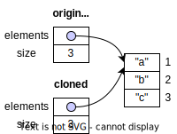
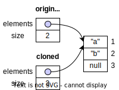
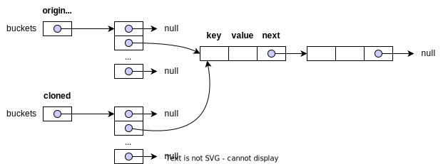
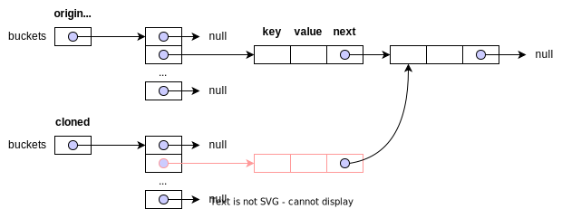
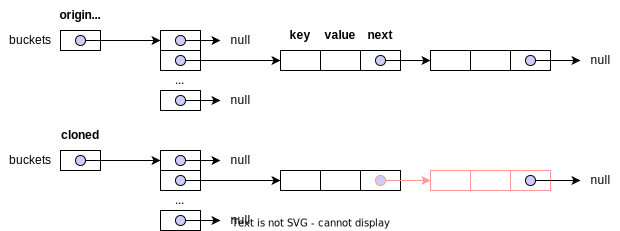

Item 13: Override clone judiciously (明智地)
使用 Cloneable 實作 clone 方法的範例
以下是使用 Cloneable 期望會實作出來的程式碼樣貌:
public class Main {
public static class Person implements Cloneable { // (1)!
private final String name;
public Person(String name) {
this.name = name;
}
@Override
public boolean equals(Object obj) {
if(obj instanceof Person p)
return name.equals(p.name);
return super.equals(obj);
}
@Override
public Person clone() { // (2)!
try {
return (Person) super.clone();
} catch (CloneNotSupportedException e) {
throw new AssertionError();
}
}
}
public static void main(String[] args) {
Person original = new Person("Teddy");
Person clone = original.clone();
System.out.println(original == clone); // false
System.out.println(original.getClass() == clone.getClass()); // true
System.out.println(original.equals(clone)); // true
}
}
- 實作
Cloneable介面，並且覆寫clone方法。 - covariant return types: Java 允許 override 方法的 return type 是原方法的子類別。
Object.clone的 return type 是Object，而Person.clone的 return type 是Person。
先說結論，應避免使用 Cloneable 實作 clone。以下說明原因。
Cloneable 的問題
Cloneable 沒有宣告 clone 方法，無法直接呼叫 Cloneable.clone
這是 Cloneable 設計上最大的缺陷，因為他沒有宣告 clone method，而 Object.clone 被宣告成 protected。也就是說，呼叫端無法因為物件是 Cloneable 就直接呼叫 clone 方法。
Cloneable person = new Person("Teddy");
Person clone = person.clone(); // ❌ 語法錯誤，因為 Cloneable 沒有宣告 clone 方法
也許有人可以反駁說，我們可以透過 reflection 來呼叫 clone 方法:
1 2 3 4 5 6 7 8 9 10 11 12 13 14 15 16 17 18 19 20 21 22 23 24 25 26 27 28 29 30 31 32 33 34 35 | |
- 我們只關注在物件的 clone 功能，這裡將
Person宣告成Cloneable。 - 使用 reflection 的方式呼叫
clone方法，但不是推薦的做法。
不過 Cloneable 沒有強迫實作介面的類別必須實作 clone。當我們把 clone (lines 16-23) 實作刪除，在跑一次程式，將在第 29 行的地方，因為找不到 clone 方法而拋出例外 java.lang.NoSuchMethodException。
Cloneable 沒有宣告任何 method，那他到底做了什麼?
Cloneable 影響 Object.clone 的行為。當一個物件實作 Cloneable 介面，齊其 Object.clone 會將回傳欄位逐一複製的物件副本。如果物件沒有實作 Cloneable 介面就呼叫 Object.clone 就會拋出 CloneNotSupportedException。
這種設計不是典型的 interface 做法，而且不應模仿。
Cloneable.clone 沒有呼叫 super.clone 實作，將會造成子類別 clone ˋ轉型的問顋
public static class Animal implements Cloneable {
@Override
public Animal clone() {
return new Animal(); // (1)!
}
}
public static class Person extends Animal {
@Override
public Person clone() {
return (Person) super.clone(); // (2)!
}
}
Animal的clone方法沒有呼叫super.clone，而是透過呼叫 constructor 建立Animal物件。因為Cloneable.clone並沒有規範，這裡的實作方法沒有任何編譯的錯誤。- 因為
Animal的clone方法沒有呼叫super.clone而是透過 constructor 建立物件，回傳的物件型態為Animal，導致這裡呼叫super.clone會無法將Animal轉型成Person物件，而拋出java.lang.ClassCastException例外。
預設 Object.clone 的實作是 shallow copy，當 mutable field 被宣告成 final 就破功了
public class Main {
public static class Stack implements Cloneable {
private Object[] elements;
private int size = 0;
private static final int DEFAULT_INITIAL_CAPACITY = 16;
public Stack() {
this.elements = new Object[DEFAULT_INITIAL_CAPACITY];
}
public void push(Object e) {
ensureCapacity();
elements[size++] = e;
}
public Object pop() {
if (size == 0)
throw new EmptyStackException();
Object result = elements[--size];
elements[size] = null; // Eliminate obsolete reference
return result;
}
// Ensure space for at least one more element.
private void ensureCapacity() {
if (elements.length == size)
elements = Arrays.copyOf(elements, 2 * size + 1);
}
@Override
public Stack clone() {
try {
return (Stack) super.clone();
} catch (CloneNotSupportedException e) {
throw new AssertionError();
}
}
}
public static void main(String[] args) {
Stack stack = new Stack();
stack.push("a");
stack.push("b");
stack.push("c");
Stack cloned = stack.clone();
System.out.println("stack pop: " + stack.pop());
System.out.println("cloned pop: " + cloned.pop());
}
}
輸出結果:
stack pop: c
cloned pop: null <!-- (1)! -->
- 期望結果是 c，但實際是
null
stack.clone 後的記憶示意:

這是 shallow copy 的結果，cloned 物件的 elements 指向的是 stack 物件的 elements。 當 stack 物件的 elements 被修改時，cloned 物件的 elements 也會被修改。所以 stack.pop 後，elements 中的元素被設定成 null 導致之後 cloned.pop 出的內容就不會是正確的。

當 client 端進一步操作 clone.pop 的物件時，因為 null 就會引起 NullPointerException。
我們需要 clone 方法實作 deep copy，這樣才能避免這個問題。
@Override
public Stack clone() {
try {
Stack clone = (Stack) super.clone();
clone.elements = clone.elements.clone();
return clone;
} catch (CloneNotSupportedException e) {
throw new AssertionError();
}
}
注意到，如果 elements 被宣告成 final 就破功了，因為無法重新被 assign value。
有些狀況需要遞迴的 clone

僅僅 deep clone 到 buckets 還不夠。

buckets 中的 Entry 物件也需要 deep clone。

直到每一個 Entry 物件都被 clone。
實作的部分就不在這裡站篇幅了，可以參考 Hashtable.Entry 的程式碼。
deep copy 與 clone 的設計出發點不同
A class implements the Cloneable interface to indicate to the Object. clone() method that it is legal for that method to make a field-for-field copy of instances of that class.
field-for-field copy 指的是 shallow copy。
在包含有 mutable field 的物件時，程式會需要
- 呼叫
super.clone()來取得 shallow copy - 重新初始化 mutable field 或者 依照原物件的狀態重新建立 mutable field 的物件
父類別 clone 方法呼叫子類別 override 的方法將導致狀態不一致
- 書中說會有這個問題，但是找不到具體並合理的範例呈現真的會有這個問題。
Quote
... If clone invokes a method that is overridden in a subclass, this method will execute before the subclass has had a chance to fix its state in the clone, quite possibly leading to corruption in the clone and the original. ...
不使用 clone 的替代方案
使用 copy constructor 或者 copy factory 來取代 clone 方法。
public Yum(Yum yum) {...}
public static Yum newInstance(Yum yum) {...}
好處:
- 在語意的實作上，比 clone 更清楚。
- 不會有需要遵守文件上的規定，但違規卻不會有任何語法錯誤的機制。
- 可以避免
clone實作在遇到 final 欄位時，無法重新 assign value 的問題。 - 不必處理不必要的例外，像是
CloneNotSupportedException。 - 不必進行物件型態轉型，可以避免錯誤轉型。
Method 接受的參數型別相依於抽象類別而非具體類別。例如 List 而非 ArrayList。這種做法稱作 conversion constructors 或 conversion factories。